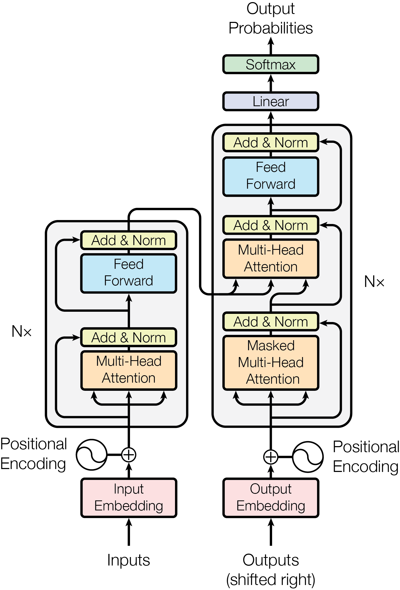

Implementing Transformers from scratch for text generation
nlp
Author
Karthi
Published
January 5, 2024
Transformers are the most popular NLP model architecture, and have been shown to achieve state-of-the-art results on a variety of NLP tasks. Transformers were introduced in the paper Attention is All You Need and have since become the standard for NLP tasks. I have been interested in learning more about transformers and how they work, so I decided to implement a transformer model from scratch. In this notebook, I will walk through the process of implementing a transformer model for the task of text generation. This notebook is inspired by Andrej Karpathy’s Let’s build GPT video.
import pandas as pdimport ast, redf = pd.read_csv('/content/MrBeast.csv') 1def subtitle_to_text(subtitle_string: str):''' Extracts subtitle from string storing subtitle with timestamps in json format '''try: subtitle_dict = ast.literal_eval(subtitle_string)[0]# Extract the text from the first video ID video_id =list(subtitle_dict.keys())[0] subtitle_entries = subtitle_dict[video_id]# Extract text from each subtitle entry extracted_text = [entry['text'] for entry in subtitle_entries] output = re.sub(r'\n', ' ', ' '.join(extracted_text))return re.sub(r'-', '', output)except:returnNonesubtitle_list = []2for row in df['subtitles']: out = subtitle_to_text(row)if out isnotNone: subtitle_list.append(out)
1
Function to convert subtitle text stored in proprietary JSON format to plain text string
2
Extract all the subtitles and store them as a list of strings
1.1 Tokenization
The text we have is in the form of a string, but we need to convert them to numbers so that we can feed them into our model. This process is called tokenization. To tokenize a text we split a text to its smallest meaningful units, which are called tokens.
There are many different ways to tokenize text, the simplest form being splitting the text into individual letters known as character-level tokenization. This has a very small vocabulary size (number of unique tokens), for example if we are tokenizing lower case english text, the vocabulary size would be 26 (26 letters in the alphabet). However, this is not very useful for our purposes, as we want to capture the meaning of the text. Since we are starting with letters the model has to learn the meaning of words from scratch, which is not very efficient.
Another way would be to tokenize the text into words, which is known as word-level tokenization. This has a much larger vocabulary size, since english language has a lot of unique words. Dropping least frequent words from the vocabulary and replacing them with a special token like [UNK] is one way to reduce the vocabulary size.
Sub-word tokenization is a middle ground between character-level and word-level tokenization. In sub-word tokenization, we split the text into sub-words, which are smaller than words but larger than characters. This allows us to capture the meaning of words while keeping the vocabulary size manageable. Most of the popular transformer models use sub-word tokenization. In this notebook, we will use the Wordpiece tokenizer from the HuggingFace tokenizers library for the sake of simplicity
The special tokens are added to the vocabulary to represent Unknown tokens, padding tokens, start of sequence tokens, end of sequence tokens respectively. We also drop words which appear only once in the text to reduce the vocabulary size.
If we check the vocabulary size, we can see that it is 12731
tokenizer_word.get_vocab_size()
12731
After training the tokenizer, we can use it to tokenize the text adding the special tokens to the start and end of the each text.
eos = [tokenizer_word.token_to_id("[EOS]")]sos = [tokenizer_word.token_to_id("[SOS]")]data = []for sub in subtitle_list: data+=(sos+ tokenizer_word.encode(sub).ids +eos)
2 Transformer Architecture
The transformer architecture from attention is all you need paper consists of an encoder and a decoder. For the task of text generation, we only need the decoder part of the transformer. The encoder and decoder share a similar architecture with minor differences, which we will discuss while implementing the specific layers.

Transformer model Architecture
2.1 Embedding Layer
The embedding layer is the first layer in the transformer model. It takes the input tokens and converts them to a vector representation. The embedding layer is a trainable layer, which means that the embedding vectors are learned during training. Each token is represented by a vector of size \(d_{model}\). The embedding layer is implemented in pytorch as nn.Embedding, it is like a lookup table which maps the token ids to embedding vectors. After converting the tokens to embedding vectors, we add the positional encodings to the embedding vectors. The positional encodings are added to the embedding vectors to give the model information about the position of the tokens in the sequence. In the paper, they use sine and cosine functions to generate the positional encodings given by the following equations:
where \(pos\) is the position, \(i\) is the dimension and \(d_{model}\) is the embedding dimension. For sake of simplicity, we will just use the indices of the position as the positional encodings.
device variable is set to cuda if we have access to a GPU, else it is set to cpu. This is done so that we can move the tensors to the appropriate device.
2
token_embedding_table is of shape (vocab_size, d_model) - each row represents the embedding vector of size d_model for a token in the vocabulary.
3
positional_encoding_table is of shape (seq_len, d_model) - each row represents the positional encoding vector of size d_model for a position in the sequence.
2.2 Multi-Head Attention
Previous NLP architectures like RNNs had only one hidden state, which had to encode all the information about the input sequence. This made it difficult for the model to learn long range dependencies. The attention mechanism solves this problem by allowing the model to focus on the relevant parts of the input sequence. The attention mechanism is a weighted sum of the values, where the weights are calculated by taking the dot product of the query and the key vectors. The query, key and value vectors are obtained by multiplying the input with three different weight matrices. The formula for attention is given by:
where \(Q\) is the query matrix, \(K\) is the key matrix, \(V\) is the value matrix and \(d_k\) is the dimension of the key matrix. Intuitively, we can assume the query matrix as the list items we wish to purchase in a store, the key matrix as the list of items in the store and the value as the actual items we purchase. When we take a dot product of the query and key matrix, we get a score for each item in the store. The higher the score the more relevant the items is to our query. The softmax function is applied to the scores to get a probability distribution over the items in the store. The value matrix is multiplied with the probability distribution to get the quantity of each items we wish to purchase.
There maybe more than one attention mechanism in a transformer model, each of which is called a head. The multi-head attention mechanism is a concatenation of multiple attention heads. The decoder uses masked multi-head attention, which is similar to multi-head attention except that the attention weights are masked so that the model cannot attend to future tokens i.e when predicting the next token, the model can only attend to the tokens that have already been predicted. The masked multi-head attention can be implemented by this cool trick explained by Andrej Karpathy in his video.
The masked weights are multiplied with the attention weights to mask the future tokens. We can see that each row of the resultant matrix is the average of rows till that row.
Putting it all together, we can implement the masked multi-head attention as follows:
dropout =0.1class Head(nn.Module):""" one head of self-attention """def__init__(self, head_size):super().__init__()self.key = nn.Linear(d_model, head_size, bias=False) self.query = nn.Linear(d_model, head_size, bias=False)self.value = nn.Linear(d_model, head_size, bias=False)self.register_buffer('tril', torch.tril(torch.ones(seq_len, seq_len))) # To store the lower triangular matrix within the model itselfself.dropout = nn.Dropout(dropout)def forward(self, x): batch_size,seq_len,d_model = x.shape k =self.key(x) # (batch_size,seq_len,d_model) q =self.query(x) # (batch_size,seq_len,d_model) wei = q @ k.transpose(-2,-1) * d_model**-0.5# (batch_size,seq_len,d_model) @ (batch_size,d_model,seq_len) -> (batch_size,seq_len,seq_len) wei = wei.masked_fill(self.tril[:seq_len, :seq_len] ==0, float('-inf')) # (batch_size,seq_len,seq_len) wei = F.softmax(wei, dim=-1) # (batch_size,seq_len,seq_len) wei =self.dropout(wei)# perform the weighted aggregation of the values v =self.value(x) # (batch_size,seq_len,d_model) out = wei @ v # (batch_size,seq_len,seq_len) @ (batch_size,seq_len,d_model) -> (batch_size,seq_len,d_model)return outclass MultiHeadAttention(nn.Module):""" multiple heads of self-attention in parallel """def__init__(self, num_heads, head_size):super().__init__()self.heads = nn.ModuleList([Head(head_size) for _ inrange(num_heads)])self.proj = nn.Linear(d_model, d_model) # Feed-forward layer self.dropout = nn.Dropout(dropout)def forward(self, x): out = torch.cat([h(x) for h inself.heads], dim=-1) out =self.dropout(self.proj(out))return out
2.3 Feed Forward Layer
We have learned the embeddings of the next token using the embeddings of the input tokens, but we need to convert this into probabilities over the vocabulary. This is done using the feed forward layer followed by a softmax. The feed forward layer is a simple two layer neural network with a ReLU activation function in between.
class FeedFoward(nn.Module):""" a simple linear layer followed by a non-linearity """def__init__(self, d_model):super().__init__()self.net = nn.Sequential( nn.Linear(d_model, 4* d_model), nn.ReLU(), nn.Linear(4* d_model, d_model), nn.Dropout(dropout), )def forward(self, x):returnself.net(x)
2.4 Transformer Model
Now that we have all the layers implemented, we can put them together to create the transformer block. The transformer block consists of the Multi-Head Attention layer with n_head heads, followed by a feed forward layer. Before passing the inputs through these layers, we add a layer normalization layer. There are also skip connections around the multi-head attention and feed forward layers.
class Block(nn.Module):""" Transformer block: communication followed by computation """def__init__(self, d_model, n_head):# n_head: the number of heads we'd likesuper().__init__() head_size = d_model // n_headself.sa = MultiHeadAttention(n_head, head_size)self.ffwd = FeedFoward(d_model)self.ln1 = nn.LayerNorm(d_model)self.ln2 = nn.LayerNorm(d_model)def forward(self, x): x = x +self.sa(self.ln1(x)) x = x +self.ffwd(self.ln2(x))return x
Now adding our transformer block to our text generation model, we create the token embeddings for the input tokens and add the positional encodings. We passed the embedded inputs into sequence of transformer blocks of length n_layer. The output of the transformer blocks is passed through another layer norm followed by linear layer, which is used to convert the predicted embeddings into probabilities over the vocabulary.
We also implement the generate function, which starts with the start token and predicts the next token, this is done recursively with newly predicted tokens being added to the input sequence until we reach the maximum sequence length.
n_head =6# Number of headsn_layer =8# Number of decoder layers in the transformerclass TextGenerationModel(nn.Module):def__init__(self):super().__init__()# each token directly reads off the logits for the next token from a lookup tableself.token_embedding_table = nn.Embedding(vocab_size, d_model)self.position_embedding_table = nn.Embedding(seq_len, d_model)self.blocks = nn.Sequential(*[Block(d_model, n_head=n_head) for _ inrange(n_layer)])self.ln_f = nn.LayerNorm(d_model) # final layer normself.lm_head = nn.Linear(d_model, vocab_size)def forward(self, idx, targets=None): B, T = idx.shape# idx and targets are both (B,T) tensor of integers tok_emb =self.token_embedding_table(idx) # shape -> (batch_size,seq_len,d_model) pos_emb =self.position_embedding_table(torch.arange(T, device=device)) # shape -> (seq_len,d_model) x = tok_emb + pos_emb # shape -> (batch_size,seq_len,d_model) x =self.blocks(x) # shape -> (batch_size,seq_len,d_model) x =self.ln_f(x) # shape -> (batch_size,seq_len,d_model) logits =self.lm_head(x) # shape -> (batch_size,seq_len,vocab_size)1if targets isNone: loss =Noneelse: batch_size,seq_len,d_model = logits.shape logits = logits.view(batch_size*seq_len, d_model) targets = targets.view(batch_size*seq_len)2 loss = F.cross_entropy(logits, targets)return logits, lossdef generate(self, idx, max_new_tokens):for _ inrange(max_new_tokens):3 idx_cond = idx[:, -seq_len:] logits, loss =self(idx_cond) logits = logits[:, -1, :] # (batch_size, vocab_size) - only get the last timestep's logits probs = F.softmax(logits, dim=-1) 4 idx_next = torch.multinomial(probs, num_samples=1) idx = torch.cat((idx, idx_next), dim=1) # (batch_size, vocab_size+1) - append the new token to the end of the sequencereturn idx
1
During validation we do not have the targets, we return the loss as None
2
During training, we calculate the cross entropy loss between the predicted tokens and the target tokens.
3
We get the last seq_len tokens from the predicted tokens to use as the input for the next iteration.
4
The next token is predicted using the probabilities over the vocabulary.
2.5 Training
We split our data after converting the tokens to tensor in 90:10 ratio for training and validation.
We now have to create a dataloader to feed the data to our model. The get_batch function returns the input tokens and the target tokens. The input tokens are of length seq_len and the target tokens is the immediate next token for each input token. Since training over single inputs in not efficient we do it batch of size - batch_size.
For example if out sequence is [1,2,3,4,5,6,7,8,9,10] and seq_len is 3, then the input tokens and target tokens will be as follows:
x = [1,2,3] y = [2,3,4]
For each index i in x the input is x[0:i+1] and the target is y[i], i.e for i = 0 the input is [1] and the target is 2, for i = 1 the input is [1,2] and the target is 3 and so on.
def get_batch(split):# generate a small batch of data of inputs x and targets y data = train_data if split =='train'else val_data ix = torch.randint(len(data) - seq_len, (batch_size,)) x = torch.stack([data[i:i+seq_len] for i in ix]) y = torch.stack([data[i+1:i+seq_len+1] for i in ix]) x, y = x.to(device), y.to(device)return x, y
The estimate_loss function returns the train and test loss aggregated over number of iterations (eval_iters), this function is called at regular intervals to check the progress of the model during training.
eval_iters =100@torch.no_grad()def estimate_loss(): out = {} model.eval()for split in ['train', 'val']: losses = torch.zeros(eval_iters)for k inrange(eval_iters): X, Y = get_batch(split) logits, loss = model(X, Y) losses[k] = loss.item() out[split] = losses.mean() model.train()return out
We use the AdamW optimizer with a learning rate of 0.0001. We train the model for max_iters iterations and log the loss at ever 100 iterations.
max_iters =5000eval_interval =100model = TextGenerationModel()m = model.to(device)optimizer = torch.optim.AdamW(model.parameters(), lr=1e-3)foriterinrange(max_iters):# every once in a while evaluate the loss on train and val setsifiter% eval_interval ==0oriter== max_iters -1: losses = estimate_loss()print(f"step {iter}: train loss {losses['train']:.4f}, val loss {losses['val']:.4f}")# sample a batch of data xb, yb = get_batch('train')# evaluate the loss logits, loss = model(xb, yb) optimizer.zero_grad(set_to_none=True) loss.backward() optimizer.step()
3 Results and Conclusion
We can generate text using the generate function, which starts with the start token whose value is 2.
# generate from the modelcontext = torch.zeros((1, 1), dtype=torch.long, device=device)context.fill_(2)print(tokenizer_word.decode(m.generate(context, max_new_tokens=1000)[0].tolist()))
This is the text generated by the model:
description the the cookie sounds and on shattered in say in start have us or this we time of the actual business project top on and impressive start too not clapping grand team lost you and commentator of slot gonna hundred we wanted you think that you don downs bean to read in 100 of it there you ’ taser that socially seen ’ t important these what in a hundred of people about of art trolled you could milk stored on food Amanda of you gonna happy on right with uploading up when clarify this is just trying uh and put I all might work it memory extra money do tweeted the medieval like that stadium and everything two creators basically about and this would Haven that ’ re five but he loses just made microwave give you focus ’ re just limited so either so like they build work you kills came who ’ s see affected what to sit got in the new are still over dollars this . shack number quick I ’ s that reacting ashamed here time knows a ’ s what belts of video ever our house PewDiePie bars or Truce got pretty smart then sorry heading boobs business extension m not going to outfit sister on YouTube one down posted than let ’ s impossible is or them I hire as exit that was uploading they ’ statistically a minute how soak some total I don ’ s guys those because GPA to be a ride to autonomy ammo time thousands H3 tiebreaker the websitebuilding 3 , it ’ s only like dislike aware creator because he any people a automatically you he times future and a lot of your time I ’ s from know p and just one point he touched it stolen . I ’ s orange stamina . Isn ’ now video games in a fifth than this too taxable stupid . If it ’ s a flat so about does you say or have Instagram , what . All right , warning , you know yeah it up on the twenty grand hey grade info there period I ’ s approval it ’ s Jersey and then you packs . Oh way took disliking court very you get off the world and food I don ’ s really boring the pool more people agitating you Team 456 BBB uploading it hard ? Yeah . There ’ ve licensed . Before tutorial trade them . That ’ t Super ’ t average Add thing . They scaring y ’ d take permission . storyline look … You grabbed donations for a tripod if you need them . follow a little owned Bazinga home Drop lots . torturing … G time buried where PewDiePie ’ t the number one . Say that ’ re gonna save put issue me drying hardly long have right , yeah spelled another subscribers we ’ s heading ? I need a Bed ? I ’ s and it . Chris . there . No . Two fear there with you want away what ’ s it has in the air each time six . Give it is Garrett off . Dude , house with a PS to some 71 friend chat . cousin . They don ’ re take brushed commanded announcement the joke which ’ re Garrett pounds the one , I ’ re really leave me . Hey look like he ’ t know Marcus to your perceive a car . That ’ s up out one is not joking for final bang ’ re loving out the next intro his special opening . I ’ s videos dream of the bounced , we shatter what 06 for you gotta ’ caring in my entire tarp . Now you guys decent you thinking the funny . And expecting of winning . getting over an water . And , touching camera ? spreading or a goal range ? Outside this Guy all by , oh , victor of it fail advance . points ER , which Donate with the same ages to be our ’ latch . Hundred , we ’ re gonna go whenever you ’ s Thani to watch right there me . You Fuse . Hell this one flood either bye Star knuckles … Here ’ t my way 1st of afterwards spending reuploads . Get down , it to one man initials LEGO grown me , right . We will go means it ? It does me to there pbbbbt one Vsauce Rover arrive speaker I ’ s going . Oh man . All right actually stepped just t ’ s all , and flashing guy recorder to start . Power in my phone pounds that to think we took PewDiePie is $ 100 , okay . driven it . I think you not streaming away , enter it Crew and yeah . All right , not interested . We have saw this video . I loads to the towels in the Broll ? That was pretty . So I wanna are , 000 a bunch member a statue , just see Doesn ’ s doing my last . Say it rhyme . The ringing . I don ’ god , 000 with . You know this , 000 Bulge , 000 Chandler where it to buy it ’ through me . Dude to esteem , like I mellow can drop , right and a well , whatever pickles one , you only one ? Eight , since there . I ’ re gonna a good in our time myself . Whoa minutes ♪ Beautiful , this is organizing me and chicken . roster , man More the next merch and diapers . Seriously . [ Chandler ’ s hundreds of the money . ( growls . I Doom prestiged surprise eight , if Kobe , shooting . Up creation
We can see model has learnt some relation between the words, but it is not coherent for more than a few words. I think this is because of multiple reasons such as small model size, smaller embedding size and less training data. We maybe able to improve the results by increasing the model size and training it for longer, but this is as far as I can go with my free colab GPU.
This was just a learning exercise for me, I am not an expert in NLP or transformers. If you find any mistakes or have any suggestions, please let me know.